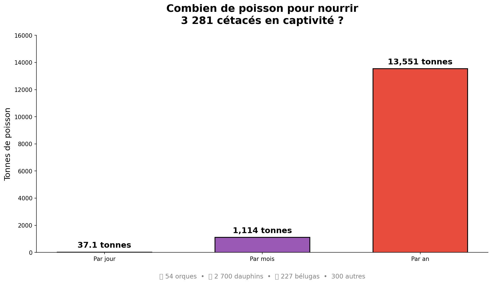
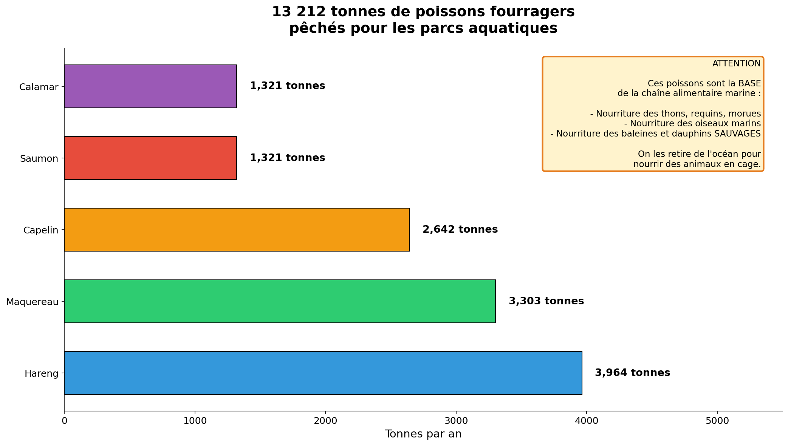
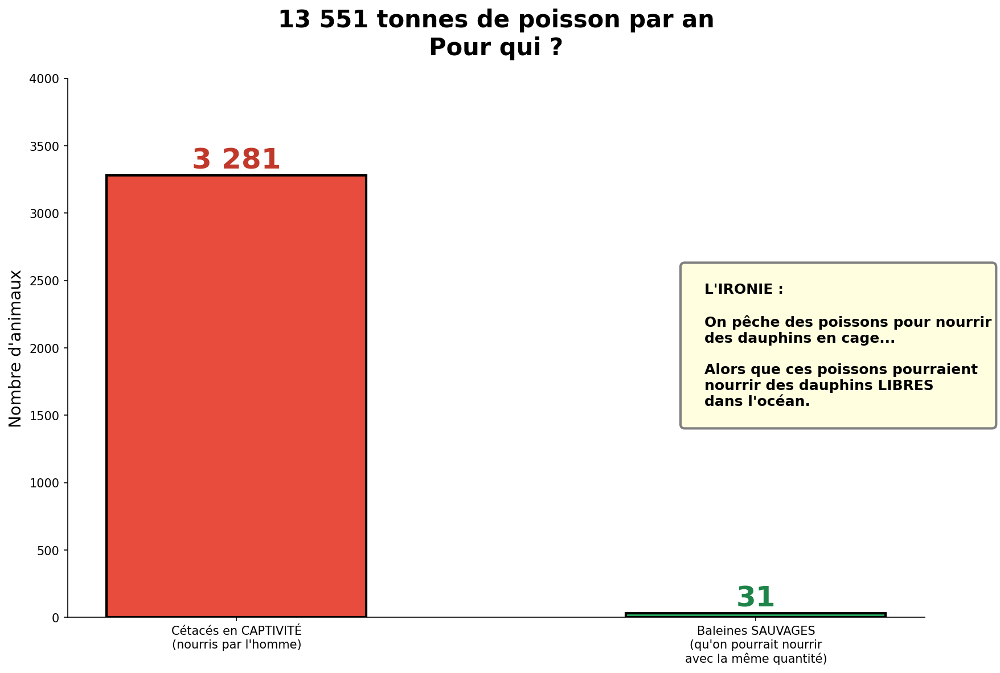
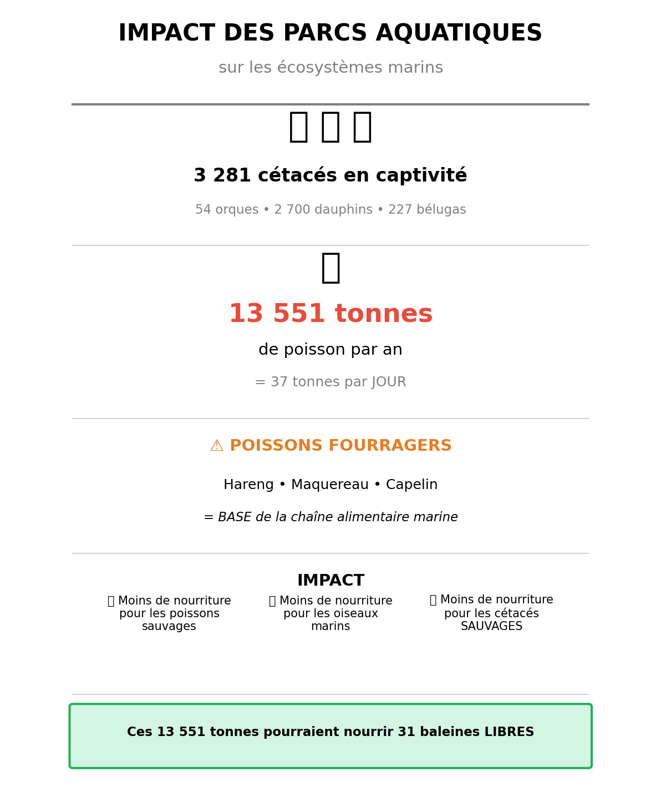

Impact des parcs aquatiques sur les ecosystemes marins
Janvier 2026
Les parcs aquatiques du monde entier maintiennent plus de 3 000 cetaces en captivite. Pour les nourrir, des milliers de tonnes de poissons sont peches chaque annee, impactant directement les ecosystemes marins.
| Mesure | Valeur |
|---|---|
| Cetaces en captivite (2024) | 3 281 animaux |
| Consommation par jour | 37 tonnes de poisson |
| Consommation par an | 13 551 tonnes de poisson |
| Poissons fourragers preleves | 13 212 tonnes / an |

Sources : Ceta-Base, WDC, publications scientifiques
| Espece | Nombre | Consommation/jour |
|---|---|---|
| Orques | 54 | 75 kg chacun |
| Dauphins | 2 700 | 10 kg chacun |
| Belugas | 227 | 25 kg chacun |
| Autres | 300 | 6-8 kg chacun |
Les poissons utilises pour nourrir les cetaces captifs sont des "poissons fourragers" : hareng, maquereau, capelin, saumon. Ces especes sont la BASE de la chaine alimentaire marine.

Sources : FAO FishStatJ, Lenfest Ocean Program

Comparaison de l'utilisation des ressources

Vue synthetique de l'impact
| Parc | Pays | Animaux | Tonnes/an |
|---|---|---|---|
| SeaWorld | USA | 188 | 1 223 |
| Chimelong | Chine | 240 | 1 278 |
| Marineland Antibes | France | 16 | 153 |
| Loro Parque | Espagne | 14 | 193 |
| Autres | Monde | 2 523 | 10 558 |